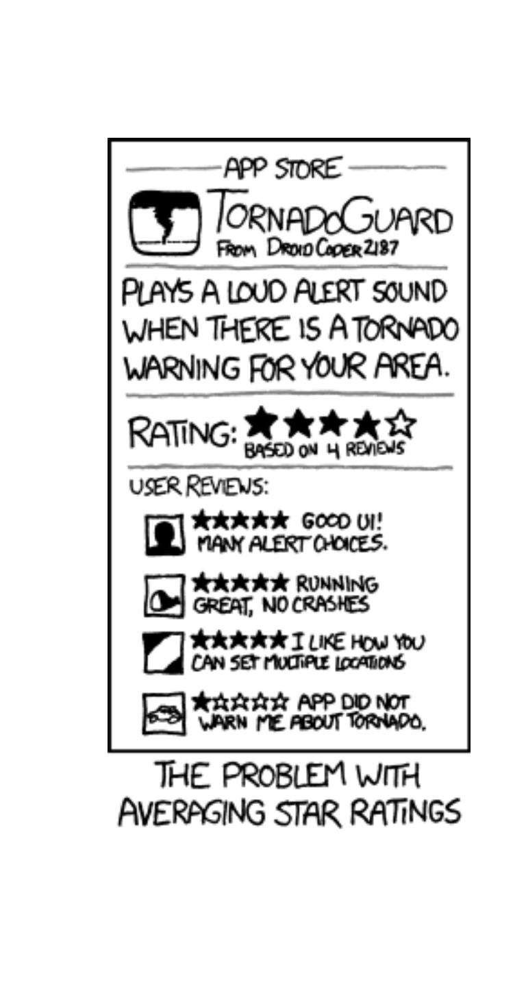
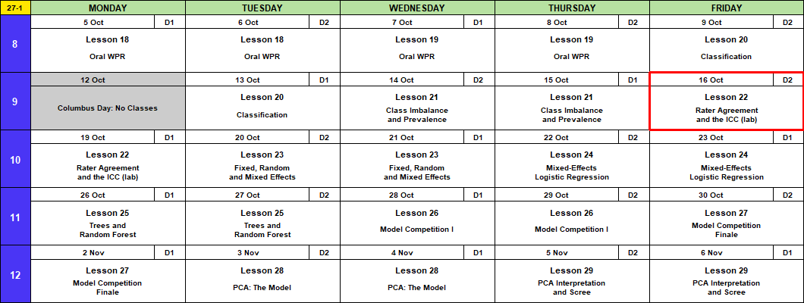
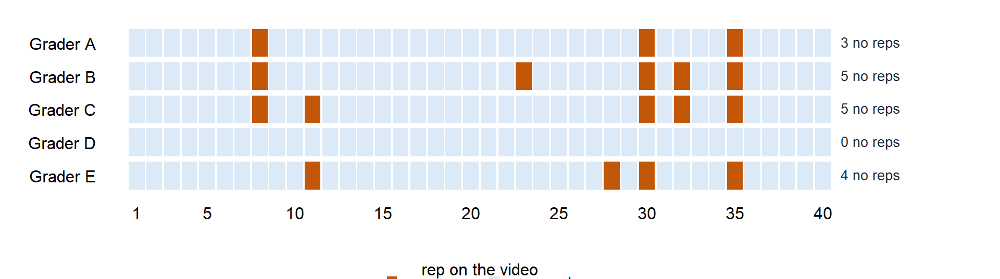
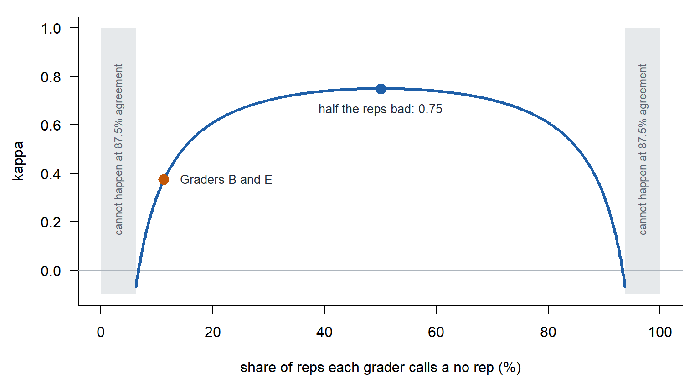
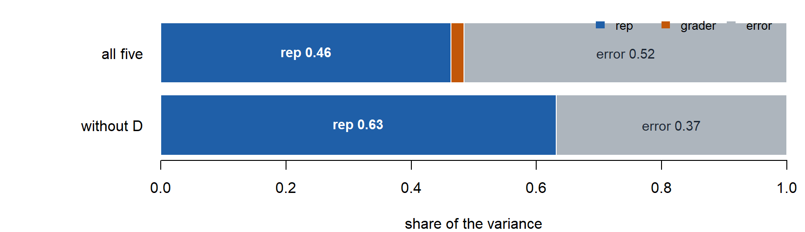

Lesson 22: Rater Agreement and the Intraclass Correlation Coefficient (ICC)
Break!
DMath Frisbee!!
Math vs CBSE
NoteResult
10-0
15-12
Calendar

Admin
- This lesson
- Capstone Milestone 1: exploration and scope. Due 2359 Friday 16 October on Canvas, 40 points.
- 1 to 2 pages: your EDA, possible research questions, what looks worth investigating
- Exploratory: you can still change your data or question before Milestone 2
- Polished writing: a plebe should understand at least 90% of it
- Before Lesson 23:
install.packages("lme4") - Lesson 27
- Block 3 quiz (Lessons 20 to 23)
- Memo 4 due in class, hard copy
- Capstone Milestone 2: methodology and preliminary results. Due 2359 Friday 13 November, 60 points.
- 2 to 4 pages that motivate and defend your method, with a short look at results
- A plebe in MA103 should understand at least 80% of it
- Capstone final presentation. Lessons 37 and 38, 3 to 8 December, 100 points.
- A recommendation to stakeholders: literature, question, method, results, implications
- I’m here through Lesson 29, 6 November.
What We Did: Lesson 21
NoteReview: Class Imbalance and Prevalence (Lesson 21)
- Rare outcome: the null classifier scores \(1 - \text{prevalence}\), and a \(0.5\) threshold flags almost nothing.
- Three fixes: move the threshold, class weights, undersample. Each one moves the cutoff. None improves the model.
- Sensitivity and specificity do not move with prevalence. Precision does.
- Report performance with the prevalence it was measured at.
What We’re Doing: Lesson 22
Objectives
- Frame. A rater is a classifier with no truth column, so agreement replaces accuracy.
- Apply. Percent agreement, kappa, PABAK, and the intraclass correlation coefficient (ICC) from a two-way ANOVA with raters as blocks.
- Mean. Chance agreement rises as prevalence moves to an extreme, so kappa collapses while agreement stays high. The ICC is the share of variance that is rep to rep.
- Communicate. Tell the first sergeant whether the graders agree and which grader is the problem.
Required Reading
Koo and Li (2016), A guideline of selecting and reporting intraclass correlation coefficients for reliability research, Journal of Chiropractic Medicine 15(2), 155 to 163. Also on Canvas.
Remember This?
Lesson 21’s clinic: 1,200 test appointments. Flag a no-show when \(\hat{p} \ge 0.5\).
| Truth: no-show | Truth: kept | |
|---|---|---|
| Predicted no-show | TP \(=\) 533 | FP \(=\) 85 |
| Predicted kept | FN \(=\) 83 | TN \(=\) 499 |
| Accuracy | Sensitivity | Specificity | Precision | \(F_1\) |
|---|---|---|---|---|
| 0.860 | 0.865 | 0.854 | 0.862 | 0.864 |
Every number here needs the Truth column. The clinic records who showed up.
What If There Is No Answer Key?
What color is the dress?

Does pineapple belong on pizza?


Yanny or Laurel?
Audio: the 2018 clip, via Wikipedia.
- The dress and the clip had right answers, and nobody could check them from the photo or the sound. Pineapple has no right answer at all.
- Without the answer key: no accuracy, sensitivity, specificity, precision or \(F_1\).
- What is left: do the raters agree?
- A rater is a classifier with no truth column.
The ACFT Graders
No answer key here either. The first sergeant says the push-up graders are inconsistent. The graders say they agree 90% of the time.
40 hand-release push-up reps on video. 5 graders watch every rep and call it a rep or a no rep.
pushup: the push-up’s number on the video, 1 to 40AtoE: 1 if that grader called a no rep, 0 if the rep counts- No truth column. Nobody knows which reps were really bad.

graders <- read.csv("data/L22_acft_graders.csv")
colSums(graders[, -1]) # no reps called by each graderA B C D E
3 5 5 0 4 Two Graders
Grader B against Grader E. Same table as the clinic, but the Truth column is now another grader.
| B: no rep | B: rep | Total | |
|---|---|---|---|
| E: no rep | 2 | 2 | 4 |
| E: rep | 3 | 33 | 36 |
| Total | 5 | 35 | 40 |
Percent Agreement
\[p_o = \frac{\text{both no rep} + \text{both rep}}{n} = \frac{2 + 33}{40} = 0.875\]
Chance Agreement
Take away the video and keep each grader’s habit.
- \(P(B) = P(\text{Grader B calls no rep}) = \dfrac{5}{40} = 0.125\)
- \(P(E) = P(\text{Grader E calls no rep}) = \dfrac{4}{40} = 0.100\)
Blind guesses are independent, so by the multiplication rule from MA206 every cell is a product, \(P(B \cap E) = P(B)\,P(E)\):
| B: no rep | B: rep | Total | |
|---|---|---|---|
| E: no rep | \(P(B \cap E) = P(B)\,P(E)\) | \(P(B^c \cap E) = P(B^c)\,P(E)\) | \(P(E)\) |
| E: rep | \(P(B \cap E^c) = P(B)\,P(E^c)\) | \(P(B^c \cap E^c) = P(B^c)\,P(E^c)\) | \(P(E^c)\) |
| Total | \(P(B)\) | \(P(B^c)\) | \(1\) |
| B: no rep | B: rep | Total | |
|---|---|---|---|
| E: no rep | \(0.125 \times 0.100 = 0.0125\) | \(0.875 \times 0.100 = 0.0875\) | \(0.100\) |
| E: rep | \(0.125 \times 0.900 = 0.1125\) | \(0.875 \times 0.900 = 0.7875\) | \(0.900\) |
| Total | \(0.125\) | \(0.875\) | \(1\) |
They agree on the diagonal: both no rep or both rep.
\[p_e = P(B \cap E) + P(B^c \cap E^c) = 0.0125 + 0.7875 = 0.800\]
Cohen’s Kappa
How much two raters agree beyond chance, as a share of the most they could have agreed beyond chance.
- Percent agreement (\(p_o\)): how often did they match?
- Chance agreement (\(p_e\)): how often would they match by chance?
\[\kappa = \frac{p_o - p_e}{1 - p_e} = \frac{0.875 - 0.800}{1 - 0.800} = \frac{0.075}{0.200} = 0.375\]
- Kappa (\(\kappa\)): how much they agreed once you remove chance.
- Top, \(p_o - p_e = 0.075\): the agreement beyond chance.
- Bottom, \(1 - p_e = 0.200\): the most agreement beyond chance there was room for.
- \(\kappa = 1\): perfect agreement.
- \(\kappa = 0\): no better than chance.
- \(\kappa < 0\): worse than chance. Something systematic, like one rater reading the scale backwards.
| Kappa | 0 to 0.20 | 0.21 to 0.40 | 0.41 to 0.60 | 0.61 to 0.80 | above 0.80 |
|---|---|---|---|---|---|
| Agreement | slight | fair | moderate | substantial | almost perfect |
Landis and Koch (1977).
- 87.5% agreement and \(\kappa = 0.38\), fair. Chance alone gets them to 80.0%.
A Drawback of Kappa: It Depends on Prevalence
When almost every rep is good, or almost every rep is bad (prevalence near 0% or 100%), graders agree a lot by chance alone. Kappa drops even though percent agreement stays high.
Hold percent agreement at 87.5%. Change how often each grader calls a no rep (prevalence).
| No rep (prevalence) | \(p_o\) | \(p_e\) | \(\dfrac{p_o - p_e}{1 - p_e}\) | \(\kappa\) | |
|---|---|---|---|---|---|
| B and E (about 11%) | 0.875 | 0.800 | \(\dfrac{0.875 - 0.800}{1 - 0.800}\) | 0.375 | fair |
| 10% | 0.875 | 0.820 | \(\dfrac{0.875 - 0.820}{1 - 0.820}\) | 0.306 | fair |
| 20% | 0.875 | 0.680 | \(\dfrac{0.875 - 0.680}{1 - 0.680}\) | 0.609 | substantial |
| 30% | 0.875 | 0.580 | \(\dfrac{0.875 - 0.580}{1 - 0.580}\) | 0.702 | substantial |
| 40% | 0.875 | 0.520 | \(\dfrac{0.875 - 0.520}{1 - 0.520}\) | 0.740 | substantial |
| 50% | 0.875 | 0.500 | \(\dfrac{0.875 - 0.500}{1 - 0.500}\) | 0.750 | substantial |
| 60% | 0.875 | 0.520 | \(\dfrac{0.875 - 0.520}{1 - 0.520}\) | 0.740 | substantial |
| 70% | 0.875 | 0.580 | \(\dfrac{0.875 - 0.580}{1 - 0.580}\) | 0.702 | substantial |
| 80% | 0.875 | 0.680 | \(\dfrac{0.875 - 0.680}{1 - 0.680}\) | 0.609 | substantial |
| 90% | 0.875 | 0.820 | \(\dfrac{0.875 - 0.820}{1 - 0.820}\) | 0.306 | fair |

- Do not compare kappas across groups with different prevalence.
PABAK fixes this. It puts every pair of graders at the same prevalence, half, so their kappas can be compared.
PABAK
Prevalence and bias adjusted kappa: the kappa you would get if both graders no-repped half the reps.
If both graders call no rep half the time:
\[p_e = (0.5)(0.5) + (0.5)(0.5) = 0.5\]
Put that into kappa:
\[\kappa = \frac{p_o - 0.5}{1 - 0.5} = \frac{p_o - 0.5}{0.5} = 2p_o - 1\]
\[\text{PABAK} = 2p_o - 1 = 2(0.875) - 1 = 0.750\]
Only \(p_o\) is in it, so prevalence cannot move it.
Graders B and E: \(\kappa = 0.375\) (fair), PABAK \(= 0.750\) (substantial). Of the 7 reps either one called a no rep, they agreed on 2. They agree on the easy reps, not the bad ones.
Grader D
Grader A against Grader D.
| A: no rep | A: rep | Total | |
|---|---|---|---|
| D: no rep | 0 | 0 | 0 |
| D: rep | 3 | 37 | 40 |
| Total | 3 | 37 | 40 |
| Calculation | |
|---|---|
| Percent agreement | \(p_o = \dfrac{0 + 37}{40} = 0.925\) |
| Chance agreement | \(p_e = \dfrac{3}{40}\cdot\dfrac{0}{40} + \dfrac{37}{40}\cdot\dfrac{40}{40} = 0.925\) |
| Kappa | \(\kappa = \dfrac{0.925 - 0.925}{1 - 0.925} = 0.000\) |
| PABAK | \(2(0.925) - 1 = 0.850\) |
- Grader D never called a no rep. Grader D is the null classifier from Lesson 21: count every rep and agree 92.5% of the time.
- Kappa catches Grader D. PABAK does not: it adjusts away the bias that is the problem.
All Ten Pairs
Kappa for every pair. Each row is one grader’s report card.
| A | B | C | D | E | Average with the others, not D | |
|---|---|---|---|---|---|---|
| A | 0.72 | 0.72 | 0.00 | 0.53 | 0.66 | |
| B | 0.72 | 0.77 | 0.00 | 0.38 | 0.62 | |
| C | 0.72 | 0.77 | 0.00 | 0.63 | 0.71 | |
| D | 0.00 | 0.00 | 0.00 | 0.00 | 0.00 | |
| E | 0.53 | 0.38 | 0.63 | 0.00 | 0.51 |
- Every pair agrees 88% to 95%. Agreement cannot find the problem grader. Kappa can.
- A, B and C are consistent with each other (0.72 to 0.77). Consistent, not proven right: with no truth column, they could all be wrong the same way.
- E is less consistent (0.38 to 0.63). D agrees with no one.
- Use A, B and C as the standard. Retrain D, then check E.
- Kappa takes two graders at a time. The ICC takes all five at once.
The Intraclass Correlation Coefficient (ICC)
The ICC is the share of the variation in a call that comes from the rep.
Two-Way ANOVA, Graders as Blocks
Each rep is graded by every grader, so the grader is a block, as in Lessons 15 and 16.
long <- data.frame(pushup = factor(rep(graders$pushup, 5)),
grader = factor(rep(c("A", "B", "C", "D", "E"), each = 40)),
no_rep = c(as.matrix(graders[, -1])))
head(long) # one row per call: 40 reps x 5 graders = 200 rows pushup grader no_rep
1 1 A 0
2 2 A 0
3 3 A 0
4 4 A 0
5 5 A 0
6 6 A 0long[long$pushup == 30, ] # one push-up, all five graders pushup grader no_rep
30 30 A 1
70 30 B 1
110 30 C 1
150 30 D 0
190 30 E 1fit <- lm(no_rep ~ pushup + grader, data = long)
anova(fit)Analysis of Variance Table
Response: no_rep
Df Sum Sq Mean Sq F value Pr(>F)
pushup 39 8.755 0.224487 5.4976 7.697e-15 ***
grader 4 0.430 0.107500 2.6327 0.03634 *
Residuals 156 6.370 0.040833
---
Signif. codes: 0 '***' 0.001 '**' 0.01 '*' 0.05 '.' 0.1 ' ' 1Where the Variance Is
\(MS_R\), \(MS_C\), \(MS_E\): the Mean Sq column for pushup, grader, Residuals.
| Source | What it measures | Variance |
|---|---|---|
| Rep | real differences in form | \(\hat\sigma^2_{\text{rep}} = \dfrac{MS_R - MS_E}{k} = \dfrac{0.224 - 0.041}{5} = 0.037\) |
| Grader | one grader harsher or softer | \(\hat\sigma^2_{\text{grader}} = \dfrac{MS_C - MS_E}{n} = \dfrac{0.107 - 0.041}{40} = 0.002\) |
| Error | a grader and a rep that do not line up | \(\hat\sigma^2_{\text{error}} = MS_E = 0.041\) |
ImportantThe ICC
\[\text{ICC} = \frac{\hat\sigma^2_{\text{rep}}}{\hat\sigma^2_{\text{rep}} + \hat\sigma^2_{\text{grader}} + \hat\sigma^2_{\text{error}}} = \frac{0.037}{0.037 + 0.002 + 0.041} = 0.464\]
| ICC | below 0.50 | 0.50 to 0.75 | 0.75 to 0.90 | above 0.90 |
|---|---|---|---|---|
| Koo and Li | poor | moderate | good | excellent |
46% of the variation in a call comes from the rep: poor.
Koo and Li list several kinds of ICC. Ours: the same graders grade every rep, a soldier gets one grader, and the calls must match exactly.
library(irr)
icc(graders[, -1], model = "twoway", type = "agreement", unit = "single") Single Score Intraclass Correlation
Model: twoway
Type : agreement
Subjects = 40
Raters = 5
ICC(A,1) = 0.464
F-Test, H0: r0 = 0 ; H1: r0 > 0
F(39,155) = 5.5 , p = 8.08e-15
95%-Confidence Interval for ICC Population Values:
0.321 < ICC < 0.618Which Grader Is the Problem

| All five | Without Grader D | |
|---|---|---|
| Grader effect, p-value | 0.036 | 0.590 |
| ICC | 0.464 (poor) | 0.633 (moderate) |
fit4 <- lm(no_rep ~ pushup + grader, data = droplevels(long[long$grader != "D", ]))
anova(fit4)- With Grader D, the graders differ (\(p = 0.036\)). Without Grader D, they do not (\(p = 0.590\)).
- The ICC climbs from 0.464 to 0.633 when one grader leaves.
Tell the First Sergeant
Graders agreed on 88% to 95% of 40 reps, but no reps are rare, so most of that agreement comes from counting good reps. Grader D never called a no rep. Grader D’s calls agree with the other graders no more than chance does (\(\kappa = 0\)), and the grader effect is gone without Grader D. With all five graders, 46% of the variation in a call comes from the rep itself (ICC 0.46, poor). Without Grader D, 63% (moderate). Retrain Grader D first.
Your Turn: Is It a Sandwich?
On your own, call each one Y (sandwich) or N (not a sandwich). No talking. Then enter your neighbor’s calls. Add a rater for each extra person in your group.
- Is your agreement high because you think alike, or because you both said N to almost everything?
- How much of your agreement was free? Compare kappa to percent agreement.
- What does PABAK say? Who in the room is your Grader D?
NoteEven Judges Disagree
- Massachusetts, 2006 (White City Shopping Center v. PR Restaurants): a burrito is not a sandwich. Panera’s lease barred other sandwich shops, and Panera tried to use it to keep Qdoba out.
- Indiana, 2024 (Quintana v. Fort Wayne Plan Commission): tacos and burritos are “Mexican-style sandwiches.”
ImportantTakeaway
- No truth column: judge raters by agreement, not accuracy.
- When one call is rare, percent agreement is mostly chance. Kappa removes the chance.
- Kappa falls as prevalence moves to an extreme even when agreement holds. PABAK puts the prevalence back at half.
- PABAK also removes bias, so it cannot find the grader who counts everything. Kappa and the grader effect can.
- The ICC is the share of variance that is rep to rep. Graders as blocks in a two-way ANOVA give it to you.
- The labels in a data set are only as good as the raters who made them. Ask who labeled Memo 4’s data.
Before You Leave
Today
- A rater is a classifier with no truth column
- Percent agreement, kappa, PABAK: high agreement and low kappa is the prevalence paradox
- The ICC from a two-way ANOVA with raters as blocks: the share of variance that is rep to rep
- Grader D: kappa and the grader effect find him, PABAK does not
Any questions?
Next Lesson
Lesson 23: Fixed, Random and Mixed Effects
- Frame. A factor is fixed when its levels are the only ones you care about and random when they are a sample of many.
- Apply. Fit a random-intercept model with
lme4and recover the ICC from its variance components. - Mean. A random intercept shrinks a small group toward the overall mean. The ICC is the correlation between two observations in the same group.
- Communicate. Explain what a station effect means when the stations are a sample.
Before class: install.packages("lme4"). Today’s grader data comes back.